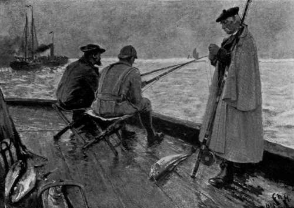

Round The British And Irish Coasts. Part 8
Description
This section is from the book "Sea Fishing", by John Bickerdyke. Also available from Amazon: Sea Fishing.
Round The British And Irish Coasts. Part 8
The tide runs very strongly in the Downs, and off Deal the sea takes the form of a huge eddy. The tide flows northward towards Ramsgate, and ebbs southward towards Dover. When running fiercely, it is next to impossible to keep a lead on the bottom, and the tide has the peculiarity of continuing to flow towards Ramsgate for about three and a half hours after high water. During the period of spring tides fishing usually begins about ten or eleven o'clock, and if the tide is then running strongly, the first anchorage will be about a quarter of a mile from the shore. As the tide eases, the boat will be shifted further out, and the fishing can be continued until about four o'clock. Four or five hours is about the longest period for fishing during spring tides. If you ask a local man when he fishes, he will tell you that he does so on ' the ease of the flood and the draw of the ebb.' When the ebb draws too strongly men up anchor, make sail, and head for the beach. When the water is clear, the best fishing is at night. From the pier there is fishing all day during neap tides, but for not more than six hours at a stretch during spring tides, unless a very heavy lead is used. The autumn and winter tariff at the Deal hotels is very moderate. For a sailing-boat and man a fair charge is about 6s. a tide, or 8s. a day.
Ramsgate offers much the same fishing as Deal—that is to say, for whiting and codling inside the Goodwins during autumn and winter. A good many silver eels are caught in the harbour, and a very occasional bass. In the spring months there is some fair fishing for whiting pout, dabs, and codling.
In the Thames estuary professional sea fishing is carried on for shrimps, whiting, flat fish, and lampern up to St. Clement's Reach, but there is not much done above the Lower Hope at Gravesend. From most of the jetties where the water is brackish a few flat fish and eels can be caught. It would seem, indeed, that the good old times when fish abounded were about to return, for the professional fishermen—who are not a class ready to admit any improvement in the fisheries— one and all declare that there is a marked improvement in the quantity and size of the fish caught in the mouth of the Thames, and that not only are fish more numerous, but that they are found higher up the river than has been the case for many years. This welcome improvement is, of course, owing to the increased purity of the water brought about by the action of the London County Council. Mud, marl, and sandy flats are the general characteristics of the river; here and there, particularly near Southend and Leigh, flat fish are very abundant, and are much sought after by anglers.
Working up the east coast, we now come into the land of cod and codling. The estuary of the Blackwater sometimes swarms with them in the autumn, and between Walton-on-the Naze and Cromer thousands are caught every year both from boats and from the shore. A small run of these fish makes its appearance about September—mere infants, weighing from one to two pounds ; but as time goes on these either grow or are succeeded by shoals of larger and older fish, and in November and later a fair number of very large cod are taken.
In a chapter devoted to the methods of fishing from the shore, I have described both the old-fashioned way of using 'throw-out' lines and the more artistic, and certainly more killing, method of casting out a paternoster, so I need not advert to these here ; suffice it to say that the fishing is found within a few yards of the beach, where, I suppose, the cod come to feed on the shrimps, etc, which are stirred up by the action of the waves.
I have never heard that there was much fishing at Harwich ; but towards Aldeburgh and Lowestoft not only large numbers of cod and codling but also a few large bass are caught every autumn. Lowestoft deserves a special mention. Both the new and the old harbours abound with large flounders, which may be taken with live shrimps as bait all through the summer months. Dozens of anglers, rod in hand, may be seen seated along the quay side of the new fish market, many of them fishing in midwater for the flat fish on the bottom ! It is far more pleasant to obtain permission to sit in one of the fishing boats moored out in the harbour, choosing for preference some spot where the shrimpers have been sifting their catches through sieves held over the water, for the small discarded shrimps are a very attractive ground bait. There flounders, called locally ' butts,' will probably abound. Smelts are plentiful in the harbour, and there are legends of grey mullet in the tidal broad at the back of the town. Long ago, those shy fish used to be found in the fresh waters of Mutford, now Oulton, Broad. Smelts are very plentiful in the harbour.
'VERY LARGE COD ARE TAKEN FROM GORLESTON PIER'.
There are important herring and mackerel fisheries off this part of the coast; but both fish are caught in nets, the professional fishermen asserting that the water is too thick for mackerel fishing with lines. In September and later there is first-rate codling fishing from the shore on the north side of the harbour. There is a shell-fish shop in Lowestoft from which large estuary mussels can be obtained for bait, and where, sometimes, lugs are kept in stock for the especial benefit of amateur sea fishermen.
At Yarmouth there is little sea fishing until the autumn, when codling, cod, and conger are caught from the piers and the shore, much as at Lowestoft. Codling, indeed, push up the Yare right into Breydon Water, where, also, are flat fish and smelts. Very large cod are taken from the Yarmouth and Gorleston piers ; occasionally fish of twenty pounds or more. I have heard it said that the cod visit Yarmouth in great quantities every alternate year. I give this statement for what it is worth.
Continue to:
- prev: Round The British And Irish Coasts. Part 7
- Table of Contents
- next: Round The British And Irish Coasts. Part 9
Tags
fishing, hooks, bait, fishermen, spanish mackerel, mackerel fishing